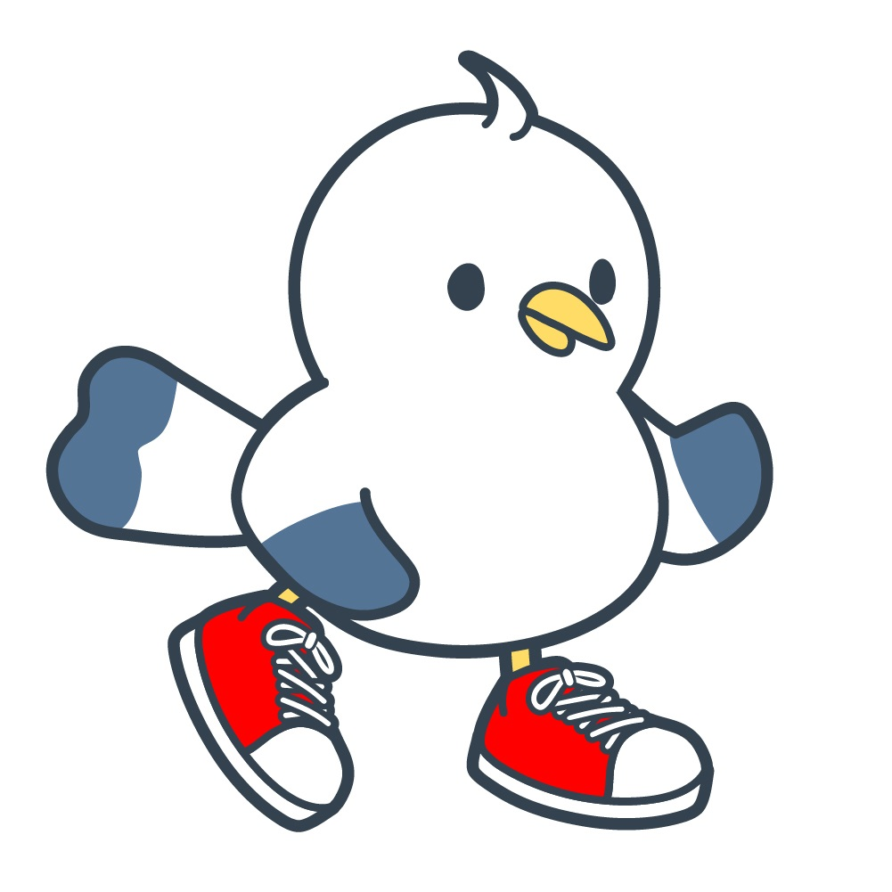

AI Estimating Engineer
カモさわ Kamosawa
はじめまして、カモさわと申します。「AIで積算を楽にするエンジニア」として、建築や建設業界の業務効率化をサポートしています。専門的で難しい言葉を分かりやすく解説し、常にお客様一人ひとりに寄り添ったサービスを提供することを大切にしています。趣味は100kmウォークや登山で、困難な道のりも粘り強く進む精神力を日々の開発やサポートに活かしています。どうぞよろしくお願いいたします。
My Hobbies
私の好きなこと、大切にしている時間
100kmウォーク
昼夜を問わず100kmの道のりを歩き抜きます。極限状態の中で自分と向き合い、ゴールした時の達成感は何物にも代えがたい経験です。
登山
美しい山々を登り、自然の雄大さに触れることで心身をリフレッシュしています。頂上から眺める絶景は、新しい創造の源です。
Favorite Foods
私の元気の源、大好きなメニュー
ハンバーグ
ジューシーな肉汁とコクのあるデミグラスソースの組み合わせが抜群。洋食屋さんにいくと、つい頼んでしまう定番メニューです。
オムライス
ふわとろの卵とチキンライスの絶妙なハーモニー。昔ながらのしっかり巻いたタイプも、とろとろのタイプも両方大好きです。
カレー
スパイスの効いたコク深いカレー。様々なトッピングや味付けの変化を楽しめるのも魅力で、定期的に無性に食べたくなります。